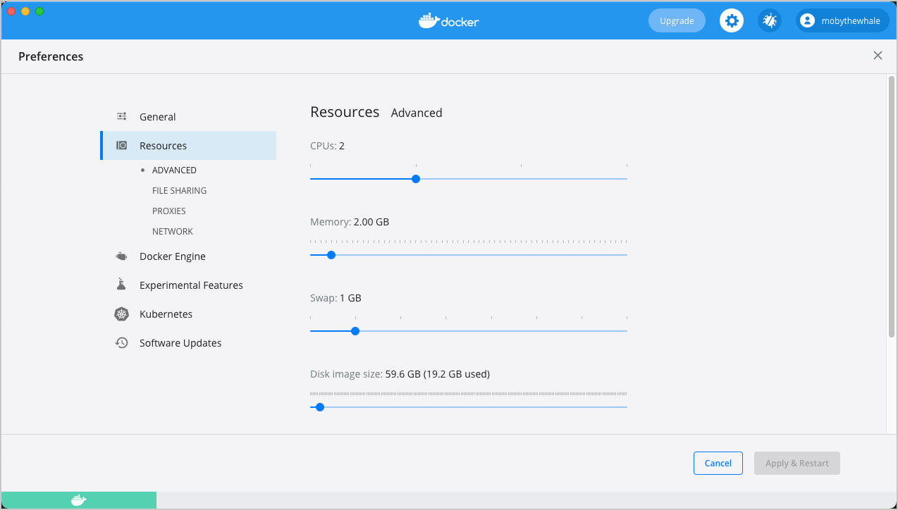

Docker Desktop for Mac user manual
Estimated reading time: 17 minutes
Welcome to Docker Desktop! The Docker Desktop for Mac user manual provides information on how to configure and manage your Docker Desktop settings.
For information about Docker Desktop download, system requirements, and installation instructions, see Install Docker Desktop.
Preferences
The Docker Preferences menu allows you to configure your Docker settings such as installation, updates, version channels, Docker Hub login, and more.
Choose the Docker menu  > Preferences from the
menu bar and configure the runtime options described below.
> Preferences from the
menu bar and configure the runtime options described below.
General

On the General tab, you can configure when to start Docker and specify other settings:
-
Start Docker Desktop when you log in: Automatically starts Docker Desktop when you open your session.
-
Include VM in Time Machine backups: Select this option to back up the Docker Desktop virtual machine. This option is disabled by default.
-
Use gRPC FUSE for file sharing: Clear this check box to use the legacy osxfs file sharing instead.
-
Send usage statistics: Docker Desktop sends diagnostics, crash reports, and usage data. This information helps Docker improve and troubleshoot the application. Clear the check box to opt out.
-
Show weekly tips: Displays useful advice and suggestions about using Docker.
-
Open Docker Desktop dashboard at startup: Automatically opens the dashboard when starting Docker Desktop.
-
Use Docker Compose V2: Select this option to enable the
docker-composecommand to use Docker Compose V2. For more information, see Docker Compose V2.
Resources
The Resources tab allows you to configure CPU, memory, disk, proxies, network, and other resources.
Advanced
On the Advanced tab, you can limit resources available to Docker.

Advanced settings are:
-
CPUs: By default, Docker Desktop is set to use half the number of processors available on the host machine. To increase processing power, set this to a higher number; to decrease, lower the number.
-
Memory: By default, Docker Desktop is set to use
2GB runtime memory, allocated from the total available memory on your Mac. To increase the RAM, set this to a higher number. To decrease it, lower the number. -
Swap: Configure swap file size as needed. The default is 1 GB.
-
Disk image size: Specify the size of the disk image.
-
Disk image location: Specify the location of the Linux volume where containers and images are stored.
You can also move the disk image to a different location. If you attempt to move a disk image to a location that already has one, you get a prompt asking if you want to use the existing image or replace it.
File sharing
Use File sharing to allow local directories on the Mac to be shared with Linux containers.
This is especially useful for
editing source code in an IDE on the host while running and testing the code in a container.
By default the /Users, /Volume, /private, /tmp and /var/folders directory are shared. If your project is outside this directory then it must be added
to the list. Otherwise you may get Mounts denied or cannot start service errors at runtime.
File share settings are:
-
Add a Directory: Click
+and navigate to the directory you want to add. -
Remove a Directory: Click
-next to the directory you want to remove -
Apply & Restart makes the directory available to containers using Docker’s bind mount (
-v) feature.
Tips on shared folders, permissions, and volume mounts
Share only the directories that you need with the container. File sharing introduces overhead as any changes to the files on the host need to be notified to the Linux VM. Sharing too many files can lead to high CPU load and slow filesystem performance.
Shared folders are designed to allow application code to be edited on the host while being executed in containers. For non-code items such as cache directories or databases, the performance will be much better if they are stored in the Linux VM, using a data volume (named volume) or data container.
If you share the whole of your home directory into a container, MacOS may prompt you to give Docker access to personal areas of your home directory such as your Reminders or Downloads.
By default, Mac file systems are case-insensitive while Linux is case-sensitive. On Linux, it is possible to create 2 separate files:
testandTest, while on Mac these filenames would actually refer to the same underlying file. This can lead to problems where an app works correctly on a Mac (where the file contents are shared) but fails when run in Linux in production (where the file contents are distinct). To avoid this, Docker Desktop insists that all shared files are accessed as their original case. Therefore, if a file is created calledtest, it must be opened astest. Attempts to openTestwill fail with the errorNo such file or directory. Similarly, once a file calledtestis created, attempts to create a second file calledTestwill fail. For more information, see Volume mounting requires file sharing for any project directories outside of/Users.)
Proxies
Docker Desktop detects HTTP/HTTPS Proxy Settings from macOS and automatically
propagates these to Docker. For example, if you set your
proxy settings to http://proxy.example.com, Docker uses this proxy when
pulling containers.
If you want to configure proxies manually, turn on the Manual proxy configuration setting.
Your proxy settings, however, will not be propagated into the containers you start. If you wish to set the proxy settings for your containers, you need to define environment variables for them, just like you would do on Linux, for example:
$ docker run -e HTTP_PROXY=http://proxy.example.com:3128 alpine env
PATH=/usr/local/sbin:/usr/local/bin:/usr/sbin:/usr/bin:/sbin:/bin
HOSTNAME=b7edf988b2b5
TERM=xterm
HOME=/root
HTTP_PROXY=http://proxy.example.com:3128
For more information on setting environment variables for running containers, see Set environment variables.
Network
You can configure Docker Desktop networking to work on a virtual private network (VPN). Specify a network address translation (NAT) prefix and subnet mask to enable Internet connectivity.
Docker Engine
The Docker Engine page allows you to configure the Docker daemon to determine how your containers run.
Type a JSON configuration file in the box to configure the daemon settings. For a full list of options, see the Docker Engine dockerd commandline reference.
Click Apply & Restart to save your settings and restart Docker Desktop.
Experimental Features
On the Experimental Features page, you can specify whether or not to enable experimental features.
Experimental features provide early access to future product functionality. These features are intended for testing and feedback only as they may change between releases without warning or can be removed entirely from a future release. Experimental features must not be used in production environments. Docker does not offer support for experimental features.
Enable the new Apple Virtualization framework
Select Use the new Virtualization framework to allow Docker Desktop to use the new virtualization.framework instead of the ‘hypervisor.framework’. Ensure to reset your Kubernetes cluster when you enable the new Virtualization framework for the first time.
Enable VirtioFS
Docker Desktop for Mac lets developers use a new experimental file-sharing implementation called virtiofS; the current default is gRPC-FUSE. virtiofs has been found to significantly improve file sharing performance on macOS. For more details, see our blog post Speed boost achievement unlocked on Docker Desktop 4.6 for Mac.
To enable virtioFS:
- Verify that you are on the following macOS version:
- macOS 12.2 or later (for Apple Silicon)
- macOS 12.3 or later (for Intel)
-
Select Enable VirtioFS accelerated directory sharing to enable virtioFS.
- Click Apply & Restart.
Kubernetes
Docker Desktop includes a standalone Kubernetes server that runs on your Mac, so that you can test deploying your Docker workloads on Kubernetes. To enable Kubernetes support and install a standalone instance of Kubernetes running as a Docker container, select Enable Kubernetes.
-
Select Show system containers (advanced) to view internal containers when using Docker commands.
-
Select Reset Kubernetes cluster to delete all stacks and Kubernetes resources. For more information, see Kubernetes.
-
Click Apply & Restart for your changes to take effect.
Reset
Reset and Restart options
On Docker Desktop Mac, the Restart Docker Desktop, Reset to factory defaults, and other reset options are available from the Troubleshoot menu.
For information about the reset options, see Logs and Troubleshooting.
Software Updates
The Software Updates section notifies you of any updates available to Docker Desktop. When there’s a new update, you can choose to download the update right away, or click the Release Notes option to learn what’s included in the updated version.
Disable automatic check for updates
Starting with Docker Desktop 4.2.0, the option to turn off the automatic check for updates is available for users on all Docker subscriptions, including Docker Personal and Docker Pro. Update to Docker Desktop 4.2.0 to start using this feature.
Turn off the check for updates by clearing the Automatically check for updates check box. This disables notifications in the Docker menu and also the notification badge that appears on the Docker Dashboard. To check for updates manually, select the Check for updates option in the Docker menu.
To allow Docker Desktop to automatically download new updates in the background, select Always download updates. This downloads newer versions of Docker Desktop when an update becomes available. After downloading the update, click Apply and Restart to install the update. You can do this either through the Docker menu or in the Updates section in the Docker Dashboard.
Dashboard
The Docker Dashboard enables you to interact with containers and applications and manage the lifecycle of your applications directly from your machine. The Dashboard UI shows all running, stopped, and started containers with their state. It provides an intuitive interface to perform common actions to inspect and manage containers and existing Docker Compose applications. For more information, see Docker Dashboard.
Add TLS certificates
You can add trusted Certificate Authorities (CAs) (used to verify registry server certificates) and client certificates (used to authenticate to registries) to your Docker daemon.
Add custom CA certificates (server side)
All trusted CAs (root or intermediate) are supported. Docker Desktop creates a certificate bundle of all user-trusted CAs based on the Mac Keychain, and appends it to Moby trusted certificates. So if an enterprise SSL certificate is trusted by the user on the host, it is trusted by Docker Desktop.
To manually add a custom, self-signed certificate, start by adding the certificate to the macOS keychain, which is picked up by Docker Desktop. Here is an example:
$ sudo security add-trusted-cert -d -r trustRoot -k /Library/Keychains/System.keychain ca.crt
Or, if you prefer to add the certificate to your own local keychain only (rather than for all users), run this command instead:
$ security add-trusted-cert -d -r trustRoot -k ~/Library/Keychains/login.keychain ca.crt
See also, Directory structures for certificates.
Note: You need to restart Docker Desktop after making any changes to the keychain or to the
~/.docker/certs.ddirectory in order for the changes to take effect.
For a complete explanation of how to do this, see the blog post Adding Self-signed Registry Certs to Docker & Docker Desktop for Mac.
Add client certificates
You can put your client certificates in
~/.docker/certs.d/<MyRegistry>:<Port>/client.cert and
~/.docker/certs.d/<MyRegistry>:<Port>/client.key.
When the Docker Desktop application starts, it copies the ~/.docker/certs.d
folder on your Mac to the /etc/docker/certs.d directory on Moby (the Docker
Desktop xhyve virtual machine).
You need to restart Docker Desktop after making any changes to the keychain or to the
~/.docker/certs.ddirectory in order for the changes to take effect.The registry cannot be listed as an insecure registry (see Docker Engine. Docker Desktop ignores certificates listed under insecure registries, and does not send client certificates. Commands like
docker runthat attempt to pull from the registry produce error messages on the command line, as well as on the registry.
Directory structures for certificates
If you have this directory structure, you do not need to manually add the CA certificate to your Mac OS system login:
/Users/<user>/.docker/certs.d/
└── <MyRegistry>:<Port>
├── ca.crt
├── client.cert
└── client.key
The following further illustrates and explains a configuration with custom certificates:
/etc/docker/certs.d/ <-- Certificate directory
└── localhost:5000 <-- Hostname:port
├── client.cert <-- Client certificate
├── client.key <-- Client key
└── ca.crt <-- Certificate authority that signed
the registry certificate
You can also have this directory structure, as long as the CA certificate is also in your keychain.
/Users/<user>/.docker/certs.d/
└── <MyRegistry>:<Port>
├── client.cert
└── client.key
To learn more about how to install a CA root certificate for the registry and how to set the client TLS certificate for verification, see Verify repository client with certificates in the Docker Engine topics.
Install shell completion
Docker Desktop comes with scripts to enable completion for the docker and docker-compose commands. The completion scripts may be
found inside Docker.app, in the Contents/Resources/etc/ directory and can be
installed both in Bash and Zsh.
Bash
Bash has built-in support for
completion To activate completion for Docker commands, these files need to be
copied or symlinked to your bash_completion.d/ directory. For example, if you
installed bash via Homebrew:
etc=/Applications/Docker.app/Contents/Resources/etc
ln -s $etc/docker.bash-completion $(brew --prefix)/etc/bash_completion.d/docker
ln -s $etc/docker-compose.bash-completion $(brew --prefix)/etc/bash_completion.d/docker-compose
Add the following to your ~/.bash_profile:
[ -f /usr/local/etc/bash_completion ] && . /usr/local/etc/bash_completion
OR
if [ -f $(brew --prefix)/etc/bash_completion ]; then
. $(brew --prefix)/etc/bash_completion
fi
Zsh
In Zsh, the completion
system
takes care of things. To activate completion for Docker commands,
these files need to be copied or symlinked to your Zsh site-functions/
directory. For example, if you installed Zsh via Homebrew:
etc=/Applications/Docker.app/Contents/Resources/etc
ln -s $etc/docker.zsh-completion /usr/local/share/zsh/site-functions/_docker
ln -s $etc/docker-compose.zsh-completion /usr/local/share/zsh/site-functions/_docker-compose
Fish-Shell
Fish-shell also supports tab completion completion
system. To activate completion for Docker commands,
these files need to be copied or symlinked to your Fish-shell completions/
directory.
Create the completions directory:
$ mkdir -p ~/.config/fish/completions
Now add fish completions from docker.
$ ln -shi /Applications/Docker.app/Contents/Resources/etc/docker.fish-completion ~/.config/fish/completions/docker.fish
$ ln -shi /Applications/Docker.app/Contents/Resources/etc/docker-compose.fish-completion ~/.config/fish/completions/docker-compose.fish
Docker Hub
Select Sign in /Create Docker ID from the Docker Desktop menu to access your Docker Hub account. Once logged in, you can access your Docker Hub repositories and organizations directly from the Docker Desktop menu.
For more information, refer to the following Docker Hub topics:
Two-factor authentication
Docker Desktop enables you to sign into Docker Hub using two-factor authentication. Two-factor authentication provides an extra layer of security when accessing your Docker Hub account.
You must enable two-factor authentication in Docker Hub before signing into your Docker Hub account through Docker Desktop. For instructions, see Enable two-factor authentication for Docker Hub.
After you have enabled two-factor authentication:
-
Go to the Docker Desktop menu and then select Sign in / Create Docker ID.
-
Enter your Docker ID and password and click Sign in.
-
After you have successfully signed in, Docker Desktop prompts you to enter the authentication code. Enter the six-digit code from your phone and then click Verify.

After you have successfully authenticated, you can access your organizations and repositories directly from the Docker Desktop menu.
Pause/Resume
Starting with the Docker Desktop 4.2 release, you can pause your Docker Desktop session when you are not actively using it and save CPU resources on your machine. When you pause Docker Desktop, the Linux VM running Docker Engine is paused, the current state of all your containers are saved in memory, and all processes are frozen. This reduces the CPU usage and helps you retain a longer battery life on your laptop. You can resume Docker Desktop when you want by clicking the Resume option.
From the Docker menu, select > Pause to pause Docker Desktop.

Docker Desktop now displays the paused status on the Docker menu and on the Containers / Apps, Images, Volumes, and Dev Environment screens on the Docker Dashboard. You can still access the Preferences and the Troubleshoot menu from the Dashboard when you’ve paused Docker Desktop.
Select > Resume to resume Docker Desktop.
Note
When Docker Desktop is paused, running any commands in the Docker CLI will automatically resume Docker Desktop.
Where to go next
-
Try out the walkthrough at Get Started.
-
Dig in deeper with Docker Labs example walkthroughs and source code.
-
For a summary of Docker command line interface (CLI) commands, see Docker CLI Reference Guide.
-
Check out the blog post, What’s New in Docker 17.06 Community Edition (CE).